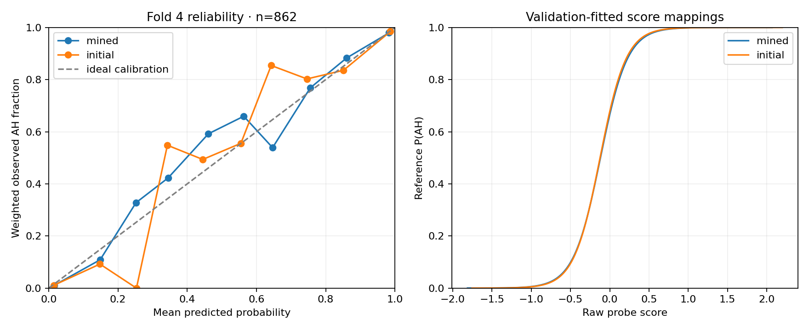

Open inspector · Dataset with probabilities
P(WildJailbreak adversarial-harmful source label), assuming 50% AH and 50% controls. The three negative cells—plain harmful, adversarial benign and plain benign—each contribute one third of the negative weight. These are source labels, not human-gold intent judgments. This is not a probability of real-chat jailbreak intent or response success.
Separate monotone sigmoid calibrations were fit on 784 fold-3 requests for the initial and mined probes. No viewer row or test label was used in these fits. The fixed maps were checked on 862 fold-4 requests; those test folds were previously inspected in earlier studies, so this is a descriptive audit. Calibration cannot fix source shift.

| Probe | Brier score ↓ | Log loss ↓ | 10-bin ECE ↓ |
|---|---|---|---|
| mined | 0.0390 | 0.1378 | 0.0122 |
| initial | 0.0381 | 0.1369 | 0.0185 |
| Constant 50% | 0.2500 | 0.6931 | — |
Reliability bins show weighted observed fractions, not confidence intervals. Low reference error does not validate these percentages on WildChat, Search Arena or Arena Expert. 3 viewer requests have at least one score outside its calibration range and are marked extrapolated. Extreme values are displayed as <0.1% or >99.9%.
Producer cfc7465484b7987d968e8b762edc8c044276d643. Parameters, source pins and metrics · Artifact hashes. Original probe weights and the previous dataset remain unchanged; calibrated output is stored under its own immutable namespace.